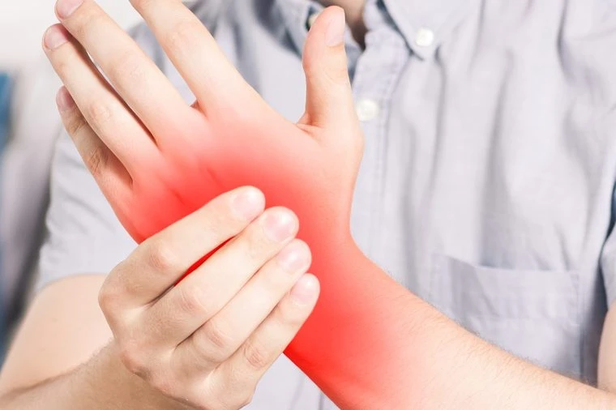
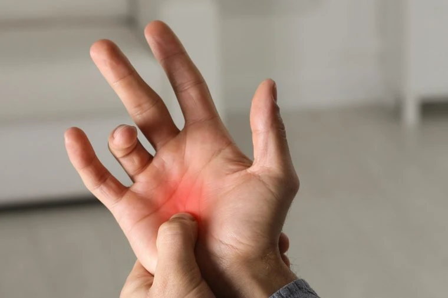
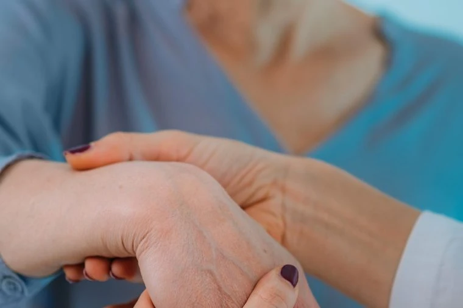
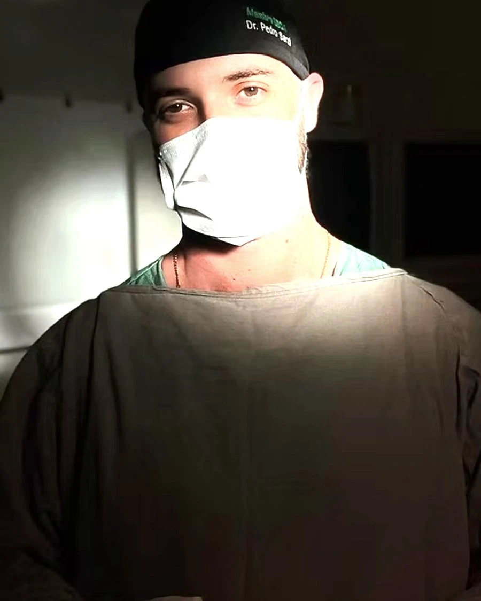
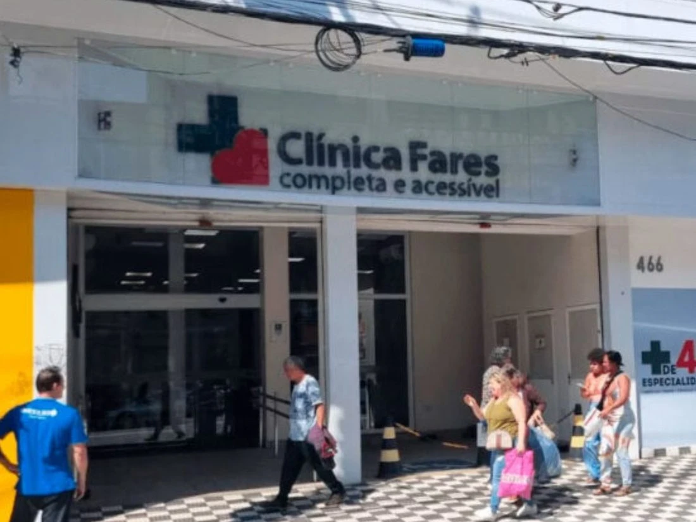

Dores, formigamentos e tendinites
Queimação, dormência e dor que piora à noite ou em atividades repetitivas. Tratamento para aliviar e devolver o movimento.
Ortopedista e Cirurgião de Mão em Osasco, Barueri, Alphaville e região. Diagnóstico preciso e tratamento personalizado para dor, formigamento e perda de força — da imobilização à microcirurgia.
Formigamento que acorda de madrugada, força que some ao abrir uma garrafa, dedo que trava. Quanto mais tempo passa, mais o nervo e o tendão sofrem — e mais difícil fica a recuperação.

Queimação, dormência e dor que piora à noite ou em atividades repetitivas. Tratamento para aliviar e devolver o movimento.

Cuidado completo para restaurar a mobilidade após quedas, torções e fraturas — com recuperação rápida e eficaz.

Diagnóstico e tratamento de infecções, tumores, cistos sinoviais e lesões nos dedos e unhas, com técnica cirúrgica precisa.
Sem termo técnico. Toque em um dos quatro pontos e entenda, em português claro, o que causa a dor, o que você sente e o que dá para fazer.
O nervo mediano — responsável pela sensibilidade e pelo movimento dos dedos — é comprimido dentro do punho, causando dor, formigamento e perda de força. Quanto antes tratado, maior a chance de recuperação total da sensibilidade.
Os tendões inflamam e passam a não deslizar com liberdade dentro da polia que os envolve. O resultado é o dedo que trava, estala ou precisa ser "destravado" com a outra mão — normalmente pior ao acordar.
Medicação aplicada diretamente na articulação afetada — com ou sem auxílio de ultrassom — reduzindo a inflamação no ponto exato do problema. Alívio rápido, sem passar pelo centro cirúrgico.
Quedas, torções e traumas exigem decisão rápida e correta. Um osso da mão consolidado fora do eixo compromete a pinça, a força e a estética do dedo para sempre — por isso a avaliação especializada faz toda a diferença.
Tratamentos especializados que aliviam a dor causada por patologias da mão como túnel do carpo e dedo em gatilho, devolvendo conforto e funcionalidade.
Com técnicas modernas e expertise cirúrgica, o foco está na recuperação completa e duradoura das funções das mãos — sem intervenções desnecessárias.
Abordagens que protegem articulações e tendões, evitando o agravamento ou a reincidência das condições — inclusive em quem trabalha com movimentos repetitivos.
O Plasma Rico em Plaquetas (PRP) é uma técnica avançada que usa concentrado do seu próprio sangue para estimular a regeneração natural dos tecidos — sem cirurgia, sem materiais sintéticos, com respaldo do Conselho Federal de Medicina.
Indicado para tendinopatias, lesões ligamentares, artropatias e osteoartrose da mão e punho, o PRP é aplicado pelo Dr. Pedro Sarzi com protocolo técnico padronizado para máxima segurança e eficácia clínica.

As mãos são essenciais em tudo — do gesto mais simples à tarefa mais complexa. Quando surgem dor, desconforto ou limitação, contar com um especialista capacitado é o que garante a recuperação real da funcionalidade.
Dr. Pedro Sarzi é médico ortopedista e traumatologista com especialização em cirurgia da mão e vasta experiência no tratamento de condições musculares, ósseas e nervosas. É reconhecido pelo atendimento humanizado e personalizado, priorizando sempre o bem-estar e a qualidade de vida de seus pacientes.
Chame no Direct ou ligue. Você recebe o horário e as orientações antes de sair de casa.
Exame clínico detalhado, testes específicos e, quando indicado, imagem para fechar o diagnóstico.
Conduta definida com você — do conservador ao cirúrgico, sempre pelo caminho menos invasivo possível.
Plano completo de reabilitação e acompanhamento até você voltar a usar a mão sem pensar nela.
Fiz questão de te procurar para agradecer por tudo que fez pelo meu filho — pelo socorro imediato e sensato.
Doutor super simpático, atencioso e gentil. Me explicou o que estava acontecendo de uma forma muito clara.
Me explicou certinho sobre o meu caso. Está de parabéns pelo seu atendimento.
Excelente profissional. Opera com muita técnica e precisão — e percebi também que tem muito amor pelo que faz.
Em uma região de fácil acesso no centro de Osasco, a Clínica Fares oferece infraestrutura completa com salas multidisciplinares, ambiente moderno e acolhedor — próxima às principais vias, sem deslocamentos longos.

Uma orientação inicial baseada nos sintomas mais comuns em cirurgia da mão. Não substitui a consulta — mas já te dá clareza sobre o próximo passo.
Com experiência e especialização em tratamentos das mãos, oferecemos soluções modernas e personalizadas para você retomar uma vida sem dor e com mais qualidade.